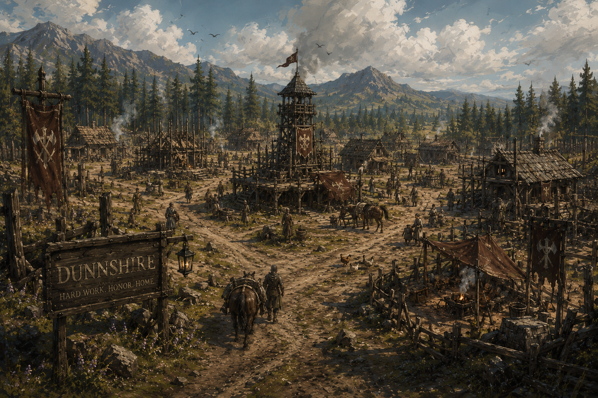
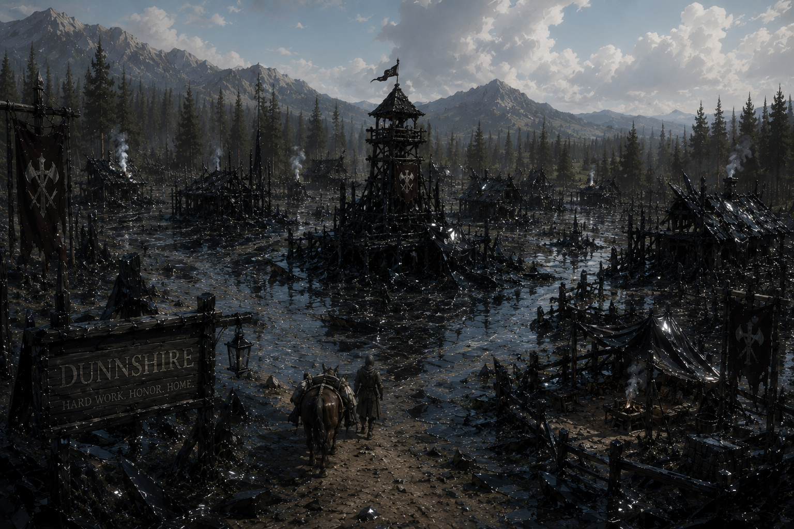
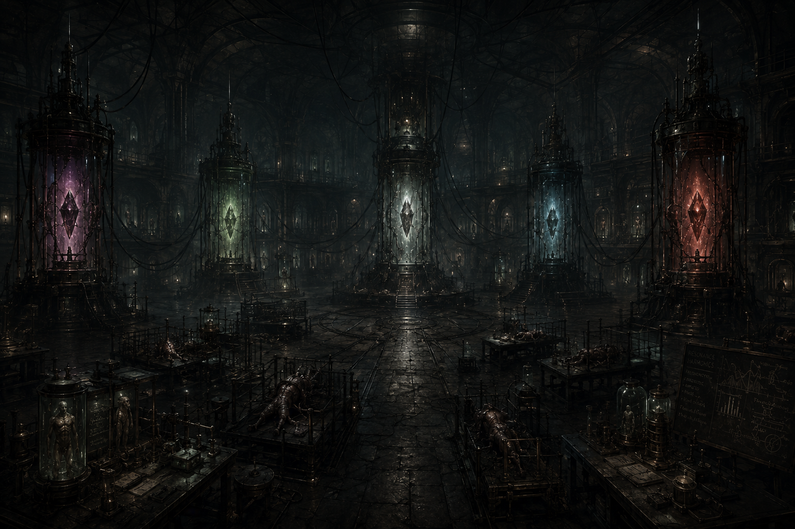
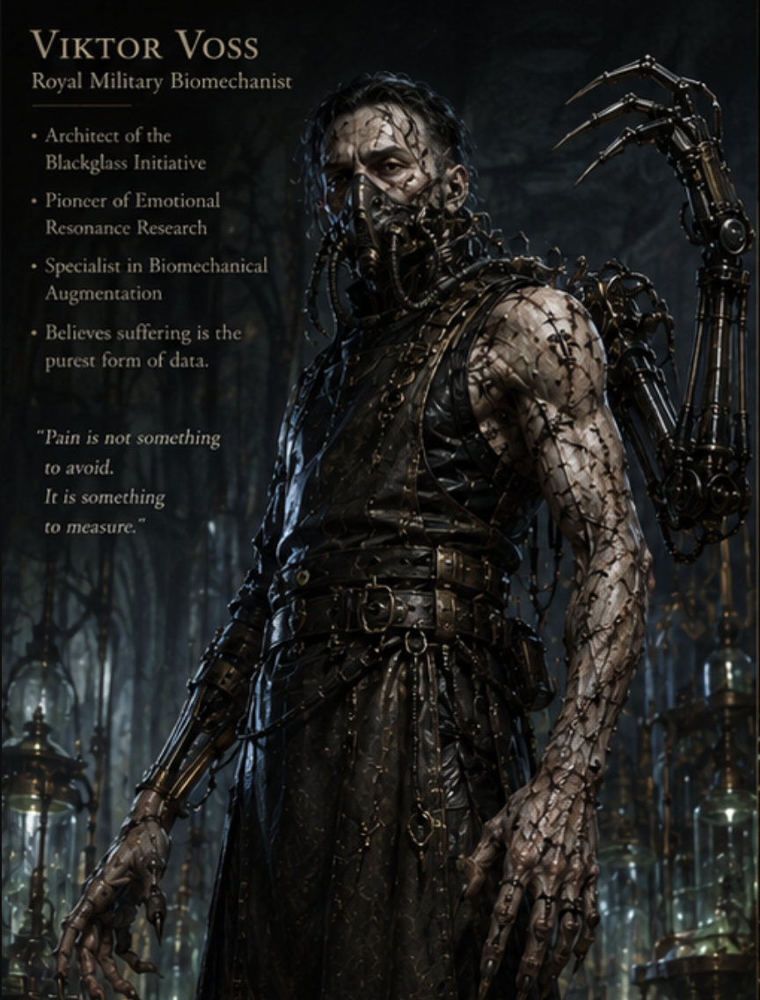
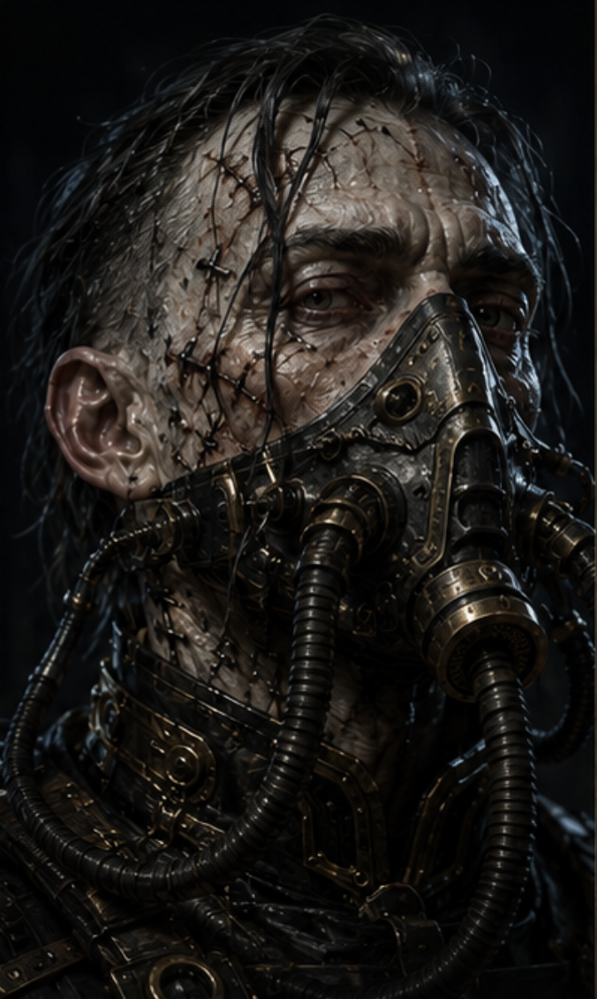
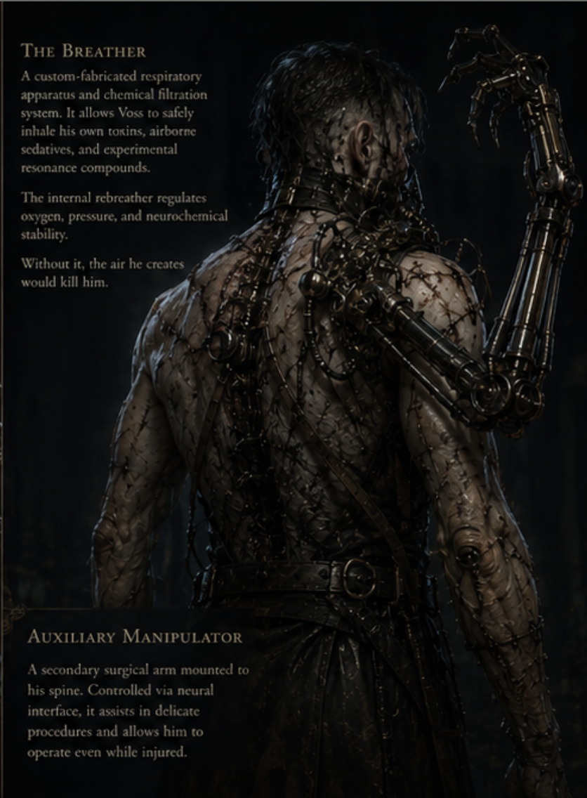

Act 2 Encounter · Viktor Voss & The Resonance Engine · Level 5–7 Party
"Nothing here was built by madness. That is what makes it horrifying."


Encounter Overview
The party descends into the ruins of Dunnshire and finds the Blackglass Laboratory beneath — a hidden research facility that is clean, clinical, industrial, and terrifyingly organized. Steam hisses through copper-veined conduits. Mechanical arms twitch overhead. Somewhere in the dark, restrained things breathe.
Somewhere in Phase 2 or 3, a player should be able to piece together what this place is. The cavehoppers in the Prologue tunnels. The Pallor Brood at the carnival. The creature in the sarcophagus in Dunmore. The resonance gems they have been carrying since Session 1.
All of it traces back here. To this room. To this man.
Critical hits do not deal bonus damage inside the Blackglass Laboratory. Instead, attacks deal normal damage and the excess emotional surge is absorbed into the nearest resonance gem, immediately adding one charge to it.
Visually: the energy ripples away from the wound and traces through glowing conduits in the floor toward the nearest pylon. This is the first signal to players that something is fundamentally wrong with this space.
This applies to both player and creature critical hits. The laboratory feeds on everyone.
The Resonance Gem System
Six emotional states charge corresponding gems embedded throughout the laboratory. Each gem tracks charges independently. At 3 charges, a gem discharges — altering the battlefield, empowering creatures, or imposing conditions. The room reacts continuously to emotional intensity. Players should begin noticing the pattern before they understand the mechanic.
Fear spells · Terror effects · Panic conditions · Frightened status applied to any creature
Build-Up CuesLights dim slightly · Low-frequency hum deepens · Shadows lengthen at the edges of the room · Restrained creatures begin twitching violently
Discharge — Terror Pulse30 ft radius. WIS Save DC 15. Failure: frightened until end of next turn + 2d6 psychic damage. All hidden or dormant creatures awaken. Area lighting extinguishes. Fear effect spreads to adjacent uncharged creatures.
Barbarian Rage · Reckless Attack · Multiattack flurries · Frenzied aggression · Critical hits (via absorption)
Build-Up CuesRhythmic heartbeat-like pounding from the Engine · Conduit tubing overheats to visible red · Machinery vibrates violently at the joints
Discharge — Berserker CascadeAll creatures gain +2 melee damage and +10 movement, but cannot voluntarily disengage. Containment restraints rupture. Caged creatures mutate aggressively and enter combat. Containment chambers crack open.
Critical hits against the party · Any creature reduced below half HP · Massive single-hit damage (20+ in one attack)
Build-Up CuesSharp metallic ringing that rises in pitch · Fluid systems begin cycling faster, audible through the walls · The Engine's central chamber brightens
Discharge — Regenerative BurstVoss heals 3d8 HP. All laboratory creatures heal 2d6 HP. Severed tissue reconnects. Inactive experimental subjects reactivate on their next initiative count.
Critical failures · Ally incapacitation or death · Expressions of despair or surrender
Build-Up CuesWhispering sounds from the walls — indistinct, almost familiar · A sense of emotional weight settling over the room · Hallucinatory echoes at the edge of vision
Discharge — Echo ManifestationWIS Save DC 15. Failure: disadvantage on attacks and checks + 2d6 psychic damage. Emotional hallucinations manifest. Spectral echoes of failed experiments twitch to life and move to intercept. Duration: until end of next round.
Killing laboratory creatures · Destroying Voss's creations · Decisive heroic victories · Destroying resonance pylons
Build-Up CuesViolent arcs of energy leap between pylons · Structural instability — dust falls from the ceiling · Gems glow with unstable, blinding brightness
Discharge — Catastrophic OverloadDEX Save DC 16. Failure: 6d6 force/fire/lightning damage. Half on success. Structural collapse begins. Random surges trigger each subsequent round. Creature control systems fail. Chain reactions spread to adjacent gems. Voss realizes triumph resonance is stronger than suffering.
Bardic Inspiration · Rally effects · Heroic speeches · Any ability that grants advantage through courage
Build-Up CuesHarmonic tones that almost resolve into a chord · Machinery stabilizes and rhythmically pulses · Steam releases evenly rather than violently
Discharge — Harmonic Resonance WaveAll negative emotional conditions on party members are cleansed. Players who successfully hit this round gain +2 on attacks next round. Monsters automatically stabilize — fear and frenzy suppressed. Mutation instability pauses. This deeply unsettles Voss. He begins realizing positive resonance is more stable than suffering.
On initiative count 20 (losing ties), the laboratory itself acts. Voss does not control these directly — they are the facility responding to accumulated resonance. Choose one each round, or roll randomly if the energy state warrants chaos.
Phase One is about establishing the encounter's wrongness before combat escalates. Voss fights methodically. He does not overextend. He observes. If a player shouts something emotional — a threat, a declaration, a desperate appeal — he notes it. The resonance gems respond to the players before they understand why.



The first gem discharge marks the transition to Phase 2. Whichever resonance fires first — the aftermath reshapes the room. Containment chambers begin showing stress fractures. Fluid systems cycle erratically. Voss stops annotating for a moment and looks directly at the Engine.
He says: "Charge rate is ahead of projection. Note that." Then he keeps fighting.
In Phase 2, the encounter widens. Containment failures introduce additional creatures into the fight — Skitterlings first, then Stitchman Prototypes if the combat extends. Voss himself becomes more mobile and more aggressive, but he continues narrating. His tone shifts from clinical to something closer to excitement. He is watching the Engine do things he has not observed before.
When Triumph or Inspiration resonance first reaches full discharge, the Engine destabilizes beyond Voss's projections. The room shakes. Two containment tanks rupture simultaneously. The Engine's central chamber pulses with blinding light.
Voss looks at his notes. Then at the party. "That is not— " He stops. "Positive resonance output is exceeding projections by a factor of— " He stops again. He looks genuinely lost for the first time.
Phase 3 is a clock. Structural collapse is actively occurring — each round, one new environmental hazard activates automatically. The party must choose: finish Voss now, or the room kills everyone.
When Voss first drops below 30 HP in Phase 3, he injects raw resonance fluid directly from the Engine's tubing into his own bloodstream. This triggers Hyperoxygenation Burst automatically (regardless of recharge). He takes one additional action immediately. He also gains the Resonance Saturation trait for the rest of the encounter: whenever a gem discharges, he heals 1d8 HP and his next attack deals +2d6 resonance damage.
Additional Laboratory Creatures
These creatures primarily appear during Phase 2 and 3 containment failures, Rage Resonance discharges, or Lair Actions. They are not Voss's primary weapons — they are experiments that have escaped containment. Some of them are still in the process of dying.